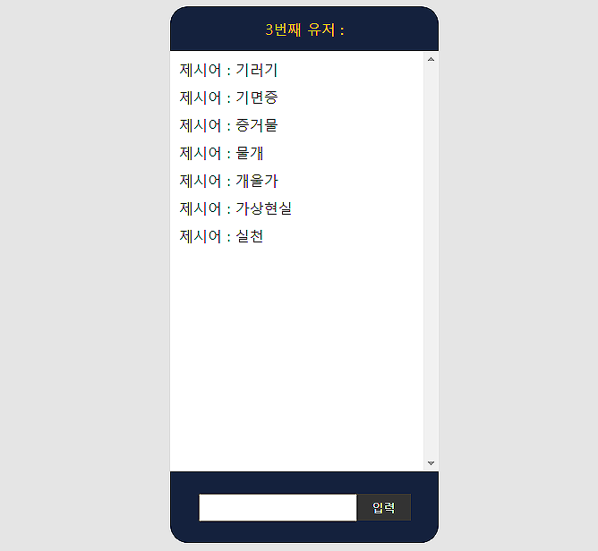
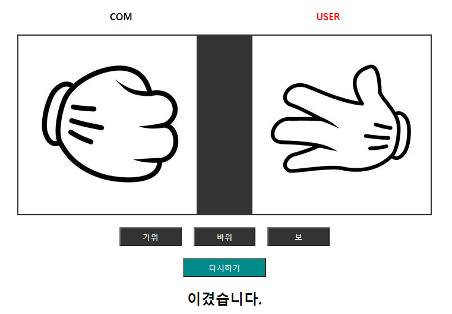

I'm ready!




NAME : KIM SEOHA
AGE : 29
CONTACT : 010.7564.4956
EMAIL : rishavallen@hanmail.net
MORE INFO >
skill
- HTML
- CSS
- JAVASCRIPT
- JQUERY
- REACT
- SCSS
- STYLED COMPONENTS
- FIGMA
- PHOTOSHOP
- ILLUSTRATOR
license
| 2005 | 워드 2급, 파워포인트 B등급 |
| 2021 | 일러스트 2급 |
| 2021 | 포토샵 1급 |
history
| 2017 | 한국공학대학교 졸업 |
| 2017 | (주)금성제어기 외함기술부 입사 |
| 2021 | 그래픽 실무자 양성 과정 수료 |
| 2021 | (주)보성글로벌 연구소 입사 |
| 2022 | PWA 프론트엔드 개발 과정 수료 |